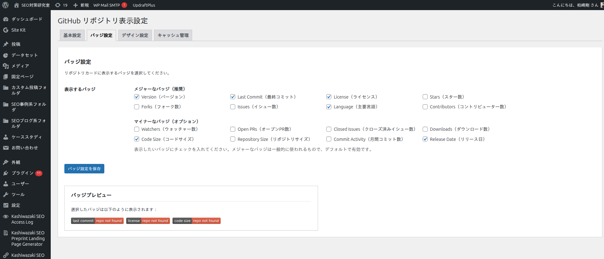
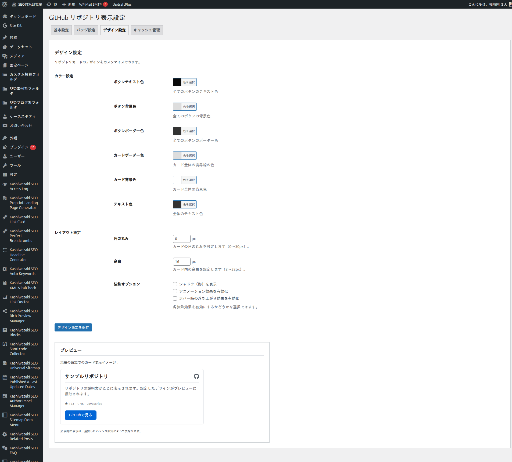

カスタマイズ
バッジの種類、カードのカラー、角丸、余白、ボタンラベルなどを管理画面から自由にカスタマイズできます。
ボタンラベル
カード表示と詳細ページに並ぶ4つのアクションボタンのラベルは、管理画面「基本設定」タブから自由に変更できます。デフォルトラベルは以下のとおりです。
| 設定項目 | オプションキー | デフォルト | 説明 |
|---|---|---|---|
| Details | kgrd_label_details |
Details | リポジトリ詳細ページへのリンクボタン |
| Source | kgrd_label_source |
Source | GitHubリポジトリへのリンクボタン |
| ZIP Download | kgrd_label_download |
ZIP Download | 最新リリースまたはデフォルトブランチのZIPダウンロード |
| Docs | kgrd_label_pages |
Docs | GitHub Pages サイトへのリンク（has_pages=true のリポジトリのみ表示） |
ヒント
空欄で保存するとデフォルトラベルに自動的に戻ります。多言語サイトでは例えば 詳細 / ソース / ダウンロード / ドキュメント のように日本語化することも可能です。
バッジ設定
管理画面「バッジ設定」タブでは、リポジトリカードに表示する shields.io バッジを16種類から選択できます。

主要バッジ（既定ON）
| バッジ | 内容 |
|---|---|
| Version | 最新リリースバージョン |
| Last Commit | 最終コミットからの経過時間 |
| License | リポジトリのライセンス |
| Stars | スター数 |
| Forks | フォーク数 |
| Issues | オープンなイシュー数 |
| Language | 主要プログラミング言語 |
| Contributors | コントリビューター数 |
追加バッジ（既定OFF）
| バッジ | 内容 |
|---|---|
| Watchers | ウォッチャー数 |
| Open PRs | オープンなプルリクエスト数 |
| Closed Issues | クローズ済みイシュー数 |
| Downloads | リリースのダウンロード総数 |
| Code Size | コードベースのサイズ |
| Repo Size | リポジトリ総サイズ |
| Commit Activity | 直近のコミット頻度 |
| Release Date | 最新リリース日 |
デザイン設定
「デザイン設定」タブからカードの見た目を変更できます。

カラー
| 項目 | オプションキー | デフォルト |
|---|---|---|
| ボタン文字色 | kgrd_button_text | #ffffff |
| ボタン背景色 | kgrd_button_bg | #333333 |
| ボタン枠線 | kgrd_button_border | #333333 |
| カード枠線 | kgrd_card_border | #dddddd |
| カード背景 | kgrd_card_background | #ffffff |
| 本文テキスト | kgrd_text_color | #333333 |
レイアウト・装飾
| 項目 | オプションキー | デフォルト | 説明 |
|---|---|---|---|
| 角丸 | kgrd_border_radius | 0 | px単位 |
| 余白 | kgrd_spacing | 16 | px単位 |
| シャドウ | kgrd_enable_shadow | オフ | カードにドロップシャドウ |
| アニメーション | kgrd_enable_animation | オフ | カードに軽いアニメーション |
| ホバー浮き上がり | kgrd_enable_hover_lift | オフ | ホバー時にカードを浮かせる |